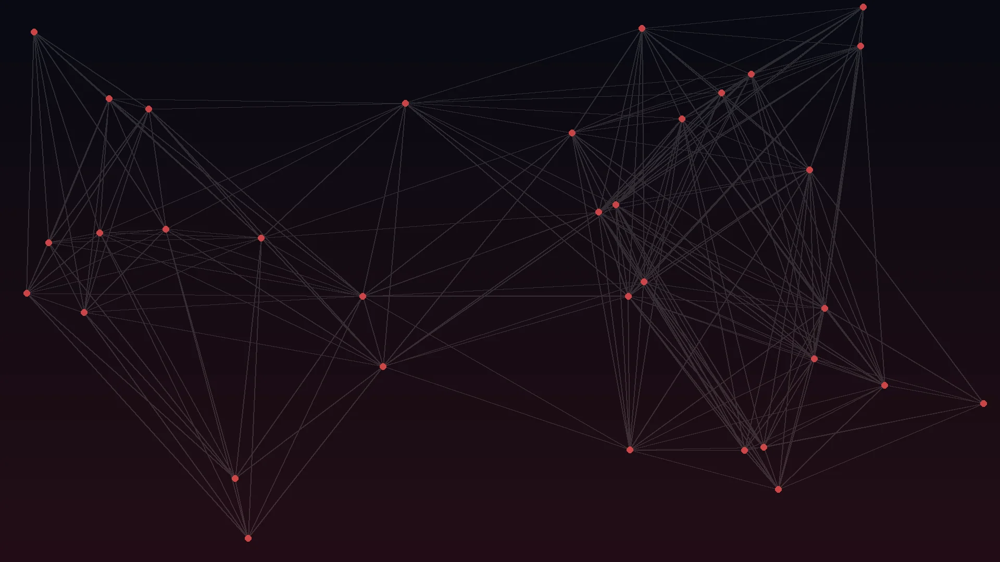
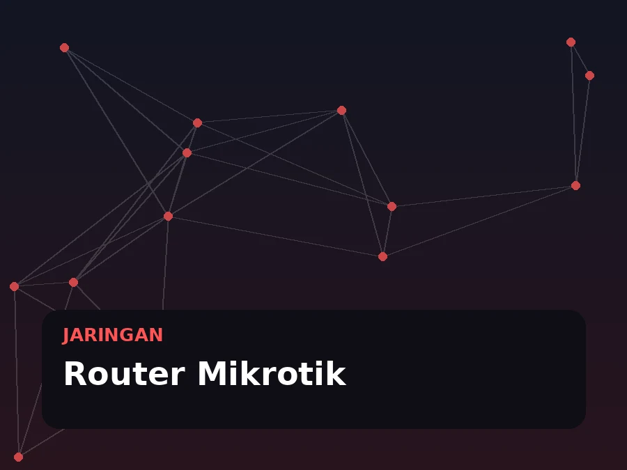
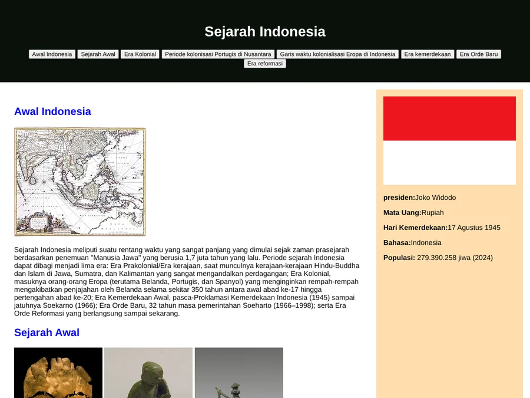

Halo, saya Fauzan
Tentang Saya
Saya merupakan lulusan SMKN 1 Bukittinggi jurusan Teknik Komputer dan Jaringan yang tertarik pada dunia jaringan, server, dan cyber security.
Membangun Jaringan, Menghubungkan Solusi
Saya M. Fauzan Azikra, lulusan SMKN 1 Bukittinggi jurusan Teknik Komputer dan Jaringan (TKJ). Selama belajar di TKJ, saya mempelajari perancangan dan konfigurasi jaringan komputer, administrasi server, perakitan dan perawatan komputer, hingga troubleshooting perangkat. Saya senang belajar teknologi baru, bekerja dalam tim, dan memastikan setiap sistem berjalan stabil.
Kemampuan Teknis
Pendidikan & Kompetensi
Latar belakang pendidikan dan materi yang saya pelajari selama di jurusan TKJ.
Yang Saya Pelajari di TKJ
Bidang-bidang inti dari kurikulum Teknik Komputer dan Jaringan.
Jaringan Komputer
Perancangan & Konfigurasi
Subnetting, pengalamatan IP, konfigurasi router dan switch, VLAN, serta routing untuk jaringan skala kecil hingga menengah.
Administrasi Sistem & Server
Linux & Layanan Jaringan
Instalasi sistem operasi, konfigurasi layanan seperti DNS, web server, dan DHCP, serta pengelolaan pengguna.
Perangkat Keras & Troubleshooting
Perakitan & Perawatan
Merakit PC, instalasi OS dan aplikasi, perawatan perangkat, serta mendiagnosis dan memperbaiki masalah hardware maupun software.
Latar Belakang Akademik
Pendidikan menengah kejuruan di bidang teknologi informasi.
Teknik Komputer dan Jaringan (TKJ)
SMKN 1 Bukittinggi
Mempelajari jaringan komputer, administrasi server, dan perawatan perangkat keras sebagai bekal memasuki dunia kerja di bidang IT.
Sertifikasi & Pelatihan
Sertifikat dan bukti pelatihan yang saya peroleh selama belajar, dikumpulkan dalam satu galeri yang bisa dilihat langsung.
Layanan & Keahlian
Hal-hal yang dapat saya kerjakan berdasarkan kompetensi di bidang TKJ.
Instalasi Jaringan
Perancangan dan pemasangan jaringan LAN, pembuatan kabel UTP dan crimping.
Konfigurasi Mikrotik
Pengaturan router, DHCP, hotspot, dan manajemen bandwidth.
Administrasi Server
Instalasi dan konfigurasi server Linux serta layanan jaringan.
Troubleshooting
Mendiagnosis dan memperbaiki masalah hardware, software, dan jaringan.
Keamanan Dasar
Pengamanan jaringan dasar seperti firewall dan pengaturan hak akses.
Butuh Bantuan di Bidang Jaringan & IT?
Hubungi saya untuk diskusi proyek, magang, atau kesempatan kerja.
Portofolio
Kumpulan proyek dan latihan praktik yang saya kerjakan selama belajar di jurusan TKJ.
- Semua
- Jaringan
- Keamanan Data
- Web

Dua router Mikrotik dengan dynamic routing OSPF, web proxy, dan hotspot. Unduh laporan


Hotspot dua router Mikrotik dengan web proxy dan firewall. Unduh laporan

Simulasi serangan DDoS di lab virtual dan pemantauan dampaknya pada router Mikrotik. Unduh laporan


Website sejarah ringkas Indonesia dari era awal hingga reformasi. Buka proyek
Tertarik bekerja sama?
Saya terbuka untuk kesempatan kerja, magang, maupun proyek di bidang jaringan dan IT.
Kontak
Silakan hubungi saya melalui kontak di bawah ini.
Alamat
Jl lintas Manggopoh perumahan lestari blok C1 no 03 Padang sawah kecamatan tigo nagari kabupaten Pasaman Sumatera Barat